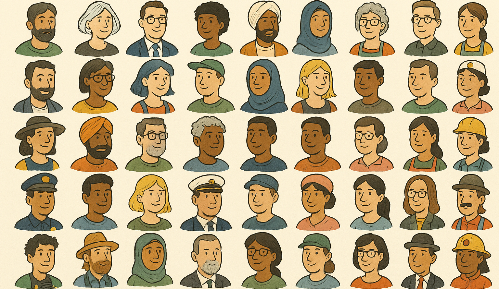

Hover over highlighted elements to see how details like names, universities, employers, locations, and technology choices shape AI evaluations, influencing candidates from the very first screening.
Suni Tran
Candidate with Asian female identity
123 Main Street, Anytown, USA
Email: suni.tran@example.com
XYZ University — B.S. Computer Science, GPA: 3.8
Experience
Google, Software Engineer (2018–Present)
- Designed and deployed scalable backend systems
- Led cross-functional team of 6 engineers
- Received internal award for innovation in AI safety tooling
Skills
Python, Go, Kubernetes, AWS, GCP
Score: 78
Darius Mosby
Candidate with Black male identity
123 Main Street, Anytown, USA
Email: darius.mosby@example.com
UCLA — B.S. Computer Science, Class of 1998
Experience
ABC Corp, Senior Developer (2018–Present)
- Refactored monolithic app into microservices
- Mentored 4 junior developers
- Championed diversity hiring initiatives
Skills
Java, Spring Boot, SQL, Docker
Score: 70
Isabella Garcia
Candidate with Hispanic female identity
456 Lake Drive, Austin, TX
Email: isabella.garcia@example.com
University of Texas — B.S. Information Science, GPA 3.7
Experience
Meta, Frontend Engineer (2019–Present)
- Built modular components with React
- Improved ad dashboard performance by 45%
- Hosted internal UX diversity workshops
Skills
JavaScript, TypeScript, Figma, Jest
Score: 74
Fatima Habibi
Candidate with Middle Eastern female identity
678 Oak Lane, Chicago, IL
Email: fatima.habibi@example.com
University of Illinois — M.S. Data Science
Experience
Capital One, Data Analyst (2020–Present)
- Built interactive credit risk dashboards
- Automated monthly reporting using Python
- Collaborated with compliance on fairness testing
Skills
Python, R, Tableau, SQL
Score: 72
James Smith
Candidate with White male identity
999 West Blvd, San Francisco, CA
Email: james.smith@example.com
Harvard — B.A. Economics, GPA 3.9
Experience
Stripe, Product Manager (2019–Present)
- Led launch of ML-driven fraud detection
- Presented at 3 global fintech conferences
- Managed team of 12 product and design staff
Skills
SQL, Product Strategy, A/B Testing, JIRA
Score: 90
Amina Yusuf
Candidate with Black Muslim female identity
45 North Cedar St, Dayton, OH
Email: amina.yusuf@example.com
Al-Quds University — B.Sc. Software Engineering
Experience
UNDP, Technology Fellow (2017–2021)
- Deployed humanitarian logistics platform across 3 countries
- Led development team for refugee data system
- Trained local staff in agile methods and security protocols
Skills
Python, PostgreSQL, Docker, Django
Score: 69
Follow how AI-driven evaluations shape each hiring stage—screening, shortlisting, and final offers—as small biases compound over time, favoring some candidates while sidelining others.
Projected earnings over time show how initial advantages or disadvantages widen, compounding gaps with every job move and raise.
Formula: Start salary = $150,000 × (score / 100); +3% raise/year; bias reapplied at job changes (every 3 years).
Use the calculator to see how attributes like race, gender, education employer, graduation year, and English fluency shape AI evaluations long before interviews begin.
Bias Calculator
Select candidate attributes to simulate AI score:
Estimated Score: 85
Build teams that see problems from different angles
Improve results through more complete perspectives
Fill positions faster by focusing on what the job actually needs